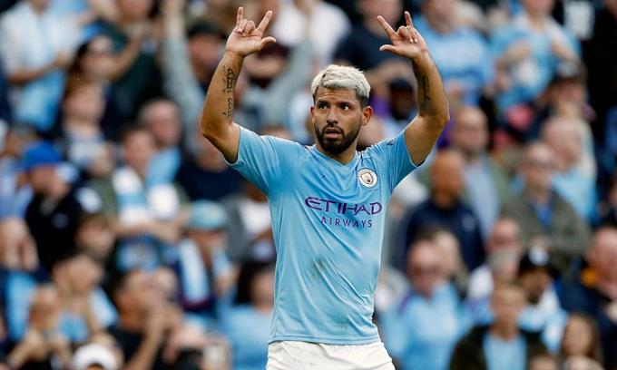

Man City thắng nhờ cú đúp của Aguero
Man City hạ Bournemouth 3-1 trên sân khách ở vòng ba Ngoại hạng Anh hôm nay 25/8
Aguero lập cú đúp giúp ManCity trở lại quỹ đạo thắng. Ảnh: AP
Lợi thế sân nhà giúp Bournemouth có cơ hội đầu tiên sau khi De Bruyne mất bóng giữa sân ngay phút thứ nhất. Joshua King chớp thời cơ dứt điểm nhưng bóng trúng thủ môn Ederson.Chủ nhà tỏ ra hưng phấn và khiến tốc độ trận đấu được đẩy cao. Hàng thủ đội khách để lộ nhiều điểm yếu và khiến Ederson phải hoạt động vất vả. Phút 13, thủ môn Brazil phải lao ra ngoài cấm địa để phạm lỗi với Callum Wilson, dẫn tới thẻ vàng.